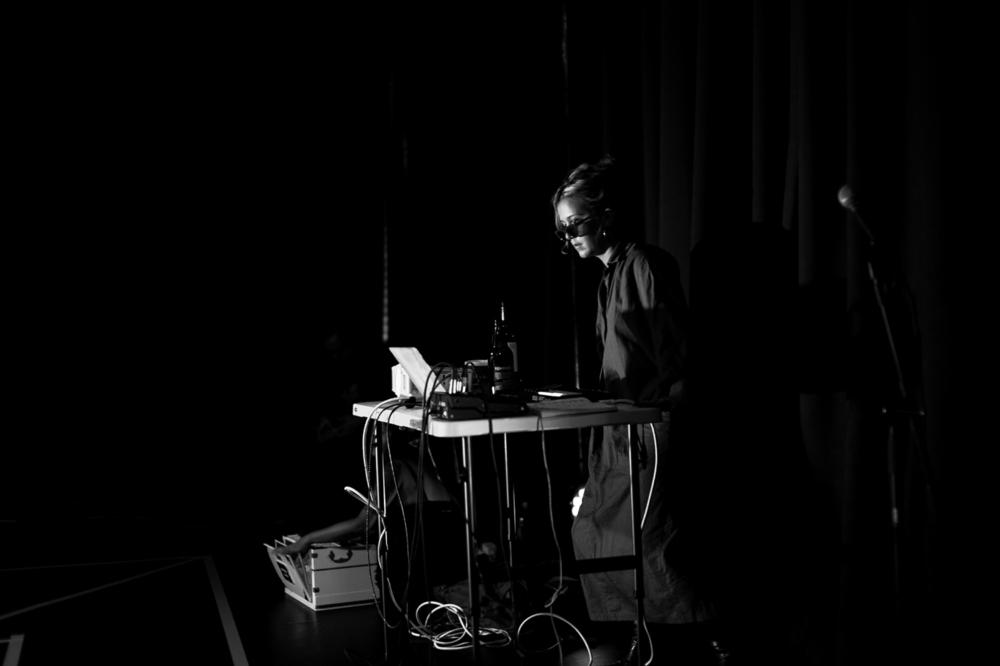

ARTIST CV2026 // 02 PAGES
DOWNLOAD PDF
ABOUT / CV
Tai Lee is a New York-based artist working across choreography, music, film, and writing. Their work moves between rigor and disorder, using rhythm and collective invention to question the structures that shape bodies and everyday life.

FILM CV2026 / 01 PAGE
DOWNLOAD PDF